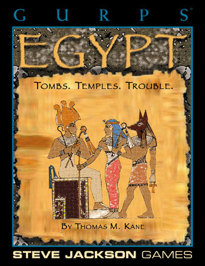

Octobre/novembre 2022
Les règles de Ghostbusters publiées en français#
Voilà, c'est fait :
- Sur ce site : Ghostbusters, les règles en français
- Sur itch.io : Ghostbusters, les règles en français
Exploration des moteurs de jeux génériques#
Dans la suite des articles précédents, je regarde les divers moteurs de jeux génériques et leurs SRD. Tout cela manque d'un dictionnaire permettant de classifier les systèmes de jeux. Il est possible que cela existe.
Tiens, prenons L'Ultime Epreuve (1983), premier JDR français, si je ne m'abuse. On peut voir le système comme un mélange entre D&D et Chtulhu.
| D&D | Cthulhu | L'Ultime Epreuve | Sur |
|---|---|---|---|
| Force | Force | Force | 3D6 |
| Dextérité | Dextérité | Dextérité | 3D6 |
| Constitution | Constitution | Constitution | 3D6 |
| Intelligence | Intelligence | Intelligence | 3D6 |
| Sagesse (Wisdom) | Pouvoir | Pouvoir | 3D6 |
| Charisme | Apparence | Charisme | 3D6 |
| Éducation | 3D6 |
En substance, Les compétences sont nommées Talents et sont d'un nombre restreint : Attaque, Défense, Tir, Capacités physiques, Manipulation, Discrétion, Détection, Influence, Connaissance et Magie. Elles sont obtenues en additionnant deux ou trois caractéristiques. Les tests sont des tests de pourcentages sous les Talents.
L'Ultime Epreuve est un jeu simple et assez agréable, au final assez compatible avec le Basic Roleplaying System de Chaosium.
James Bond RPG#
James Bond est aussi un jeu à caractéristiques avec des jets de compétences.
| D&D | Cthulhu | James Bond |
|---|---|---|
| Force | Force | Force |
| Dextérité | Dextérité | Dextérité |
| Constitution | Constitution | |
| Intelligence | Intelligence | Intelligence |
| Sagesse (Wisdom) | Pouvoir | Volonté |
| Charisme | Apparence | |
| Éducation | ||
| Perception |
La création des personnages se fait avec des points de création permettant d'acheter ce que vous voulez. Les compétences sont aussi le fruit d'un calcul avec des caractéristiques. Pour autant, le score obtenu n'est pas exactement un pourcentage. Pour tester une compétence, il faut regarder quel "barème" utiliser en fonction d'un facteur de difficulté.
Autres jeux en cours#
Je regarde ou ai regardé récemment :
- Questworlds SRD : je ne suis pas emballé, j'ai l'impression d'un Risus en beaucoup plus compliqué.
- Cypher System preview : je n'ai fait que tourner les pages.
- Tango RPG system : ça ressemble un peu à Dungeon Squad.
- Drama System : un drôle de truc de Robin Laws (l'inventeur de Gumshoe si je ne m'abuse).
- Corpus Mechanica : un système français très D6.
- J-Système ici, un système de jeu avec des cartes. Je n'ai pas creusé.
- Tri-Stat DX ici, un système intéressant dont je n'ai pas fini la lecture.
- Metal SRD, pas lu mais je me souviens avoir joué à Bloodlust 1e.
- Basic Fantasy Roleplay, je connais bien, c'est pas lui que j'ai découvert la notion d'OGL et de SRD voilà quelques années.
- Microlite20, un classique, je crois même en avoir fait une traduction quelque part.
- Dungeon Crawl Classics, j'ai entamé la lecture et c'est assez marrant.
Mais je manque de temps pour classifier un peu tout cela...
Quelques mots sur Rêve de Dragon#
Je viens de mettre la main sur l'édition du Scriptorium de Rêve de Dragon... Et moi qui trouvait que Légendes était un jeu compliqué !
Petit statut en passant#
J'ai lu ou relu pas mal de choses ces temps-ci.
Basic Roleplaying System 4e#

J'avoue que j'aime bien. C'est simple et intuitif et, d'une certaine façon, c'est le système que je connais le mieux. J'ai regardé les pouvoirs psy. Malheureusement, je ne trouve pas ça top. J'aime bien les jets de pourcentage, comparé à des nombres de d6 (qui ont toujours des courbes de probabilités en cloche).
Légendes de la Valée des Rois#

Malgré ma critique de la gamme Légendes, j'ai lu consciencieusement les deux livres de ce jeu que je ne connaissais pas trop.
Un jeu injouable#
Le livre de civilisation est pas mal fait, quoique totalement descriptif. On pourra regretter le manque total de pistes d'intrigues, ou d'idées de scénarios. On est vraiment dans le supplément historique, et c'est vraiment dommage.
Le scénario est à l'avenant : court, simpliste, et insuffisant pour bâtir des personnages qui ont des aventures sur plusieurs sessions.
Là, la barre est très haute et s'adresse à des MJs chevronnés (je ne parle que de l'univers) et des joueurs passionnés. On peut reprendre la table d'accessibilité définie ici.
| Jeu | Access. Monde | Access. Magie | Motivation fondamentale | Complexité jeu | Accessibilité |
|---|---|---|---|---|---|
| Légendes de la Vallée des Rois | Difficile (u)(1) | Difficile (v)(1) | Difficile (w)(1) | Difficile (1) | 1.00/4 |
On voit bien la marque de fabrique de Légendes...
Le livre de règles est un ouvrage bizarre. Au début, on pourrait penser que les règles sont simples, mais progressivement, les règles se complexifient jusqu'à devenir franchement complexes, même pour la création des personnages. La magie montre un réel travail, mais nécessitant un énorme effort de mise en pratique. Et puis, avec les deux types de magie correspondant grosso modo aux deux classes sociales, comment constituer un ensemble homogène.
Ce qui est intrigant avec ce genre de jeux, c'est que l'on se demande s'il a été play-testé. Où est l'aventure ou le mystère quand on joue un savetier de la XVIIIème dynastie ? Je me demande s'il est possible de jouer autre chose que des personnages pré-tirés dans cet univers.
Les éléments d'une seconde édition#
Evidemment, si l'on faisait une seconde édition, on pourrait tirer quelque chose du matériau original :
- Il faudrait simplifier drastiquement le système de jeu, et pas forcément le contenu de fond, comme celui de la magie ;
- Il faudrait avoir des règles pour que les personnages soient dans un groupe social homogène (là, on peut être mendiant ou pharaon au tirage, ce qui ne permet pas de faire des groupes homogènes, c'en est même ridicule), ces règles devraient aussi donner des pistes pour des ensembles d'aventures de groupes et non proposer de jouer tous les métiers dans un univers historique ;
- Il faudrait penser un peu différemment la magie, car elle est très complexe ;
- Il faudrait ajouter des idées de scénarios un peu partout dans la timeline historique.
Le sujet religieux est aussi abordé d'un point de vue historique. Cette partie est intéressante, mais elle aurait pu être rendue plus "fantastique" en matérialisant les divers Dieux le long du Nil dans les événements historiques. Je veux dire, si l'on ne tisse pas les dieux dans l'histoire, les créatures à têtes d'animaux tombent un peu comme un cheveu sur la soupe. Il aurait fallu faire deux colonnes : les événements historiques d'un côté et l'interprétation magique de l'autre.
Cela me fait penser à l'approche prise par Ars Magica : nous sommes bien dans le Moyen-Age historique, mais avec des mages qui ont des pouvoirs et une vision différente de la réalité.
Les options prises par GURPS#

Si on compare, GURPS rame un peu quand même dans cet univers antique égyptien, mais fait le choix de simplifier le nombre de profils de PJs, la magie, etc., et d'ouvrir sur d'autres perspectives et d'autres suppléments de la gamme GURPS qui auraient besoin de backgrounds historiques pour des aventures se déroulant en Egypte. Historiquement, c'est plus sommaire, mais c'est plus jouable et plus ouvert. Certes, on tombe vite dans les momies, dans un cas comme dans l'autre...
C'est le côté difficulté de l'accessibilité du monde et de la magie. Pour les occidentaux que nous sommes, l'Egypte ancienne est quand même lointaine et les archétypes connus de cette période ne sont pas nombreux : pyramides, pharaons, momies...
Y a-t-il des créateurs dans la salle ?#
Ca me donne un genre de goût amer dans la bouche, car Légendes de la Vallée des Rois est un jeu français, et au final, il n'a pas été joué et, aujourd'hui non plus, il n'est plus joué. Donc l'objectif n'est pas atteint. Après, faut-il sauver tous les jeux ?
Dans mes jeunes années, on avait le choix entre deux types de jeux :
- Des traductions de jeux américains, dont D&D et CoC,
- Des jeux français, dont L'Ultime Epreuve, Légendes, Méga, Empire Galactique, Maléfices, Rêve de Dragon, Empire et Dynasties, Bitume, etc.
Aujourd'hui, ça me semble plus compliqué. On a beaucoup de traductions (que je trouve souvent pas top), pas mal de trucs issus de SRD américains, à commencer par les SRD de D&D 3.5e, et quelques rééditions squelettiques ou confidentielles de jeux français de l'époque, je pense à Maléfices ou à Méga 5.
| Date | Jeu | Editeur | Editions |
|---|---|---|---|
| 1983 | L'ultime Epreuve | Aucun | Plus d'édition |
| 1983 | Légendes | Aucun | Plus d'édition |
| 1984 | Méga | editions-leha.com | 5ème édition publiée mais non supportée |
| 1984 | Maléfices | arkhane-asylum.fr | Seconde édition annoncée mais introuvable |
| 1984 | Empire galactique | Aucun | Plus d'édition |
| 1985 | Rêve de Dragon | scriptarium.org | 3ème édition manifestement bien supportée |
| 1986 | Bitume | raise-dead.com | 6ème édition annoncée mais introuvable |
| 1986 | La Compagnie des Glaces | Aucun | Plus d'édition |
| 1986 | Avant Charlemagne | Aucun | Plus d'édition |
| 1988 | Empires et Dynasties | Aucun | Plus d'édition |
| 1988 | Zone | Aucun | Plus d'édition |
| 1988 | Simulacres | Aucun | Plus d'éditions |
| 1989 | Hurlements | Aucun | Plus d'éditions |
| 1989 | Athanor | Aucun | Plus d'éditions |
| 1990 | INS/MV | raise-dead.com | 5ème édition |
| 1991 | Heavy Metal | Aucun | Plus d'éditions |
| 1991 | Bloodlust | Aucun | Plus d'éditions après Bloodlust Metal |
| 1992 | Nephilim | mnemos.com | 5ème édition |
Ce qui veut dire que, pour le vieux joueur que je suis (1989 est ma limite à l'époque), il ne reste que Méga et Rêve de Dragon et encore, pas dans leurs éditions originales.
Les jeux américains ont conservé des empruntes durables parce qu'ils vivent, voire même se répètent à chaque édition : D&D, on en est à la 5 ; CoC à la 7 ; et tutti quanti. Les présentations changent, les règles évoluent, les scénarios anciens sont revus et d'autres sont créés. Il y a une logique de gamme.
Mais nous les français, on a du mal à suivre nos jeux. Les jeux sont soutenus par leur auteur et puis après, pouf, ils disparaissent. Ils sont difficiles à trouver, à l'heure du PDF et l'impression à la demande !!!! Alors que je peux trouver Tunnels & Trolls première édition en PDF !!!
Vous les créateurs de JDR français à la retraite, qu'est-ce que vous foutez ? Vous attendez quoi pour faire des PDF, même scannés ?
Par exemple, je veux acheter une première édition de Rêve de Dragon. Hé bien, je peux me brosser.